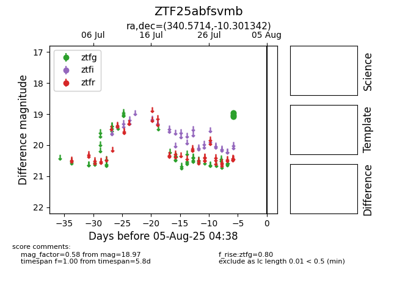

Target ZTF25abfsvmb at 2025-08-05 04:38, see:
FINK: fink-portal.org/ZTF25abfsvmb
Lasair: lasair-ztf.lsst.ac.uk/objects/ZTF25abfsvmb
ALeRCE: alerce.online/object/ZTF25abfsvmb
alt names
ZTF25abfsvmb (ztf,fink)
coordinates:
equatorial (ra, dec) = (340.5714,-10.30134)
galactic (l, b) = (55.6562,-55.26393)
photometry
last ztfg=18.97
6 ztfg detections
